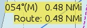
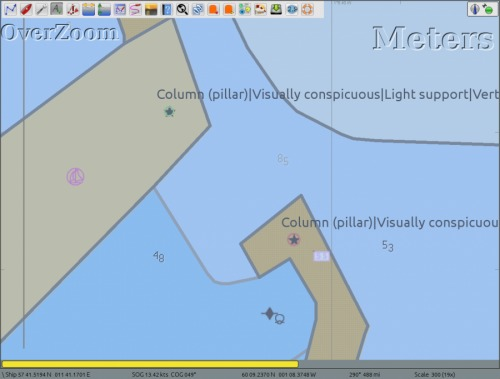
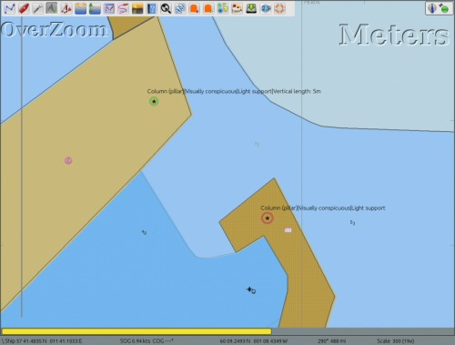
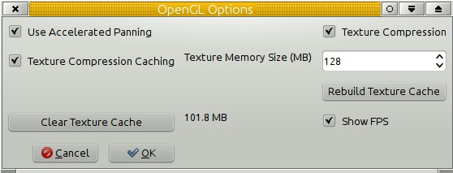
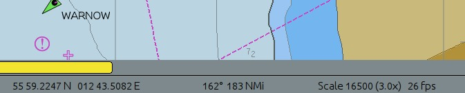

The Display
General

Navigation Modes
North Up /Course Up
North Up is the normal way charts are shown, with north at the top. Course Up rotates the chart so what you see in front of the boat in real life is above the Own Ship icon on the display.
Lookahead Mode
The Own Ship icon will be offset from the center of the screen so that more of the chart is in front of Own Ship than behind. Read more in Auto Follow and Display Orientation
Chart Display
Enable Chart Quilting
The screen shows several charts seamlessly stitched together. More in Chart Quilting .
Preserve scale when switching charts
Normally when switching charts OpenCPN will open the new chart scaled close to it's natural scale, the zoom factor stays the same. With this box ticked OpenCPN will keep the scale from the last chart as close as possible when switching. The zoom-factor will increase as you switch to smaller scale charts.
Controls
Smooth Panning/Zooming
This works best together with OpenGL. Test to see how it works with your graphic card. If you are using OpenGL, tick this box as well.
Zoom to Cursor
With this box ticked the display is centered at the location of the mouse pointer when you zoom using the mouse wheel. When the box is not ticked the center of the display remains the same when you zoom with the mouse wheel just as it does when you zoom with the + and - keys or the zoom icons on the toolbar. In either case, if you click on the screen the point where you clicked will be moved to the center of the display.
Zoom to Cursor Summary
- Keyboard, Menubar, and Toolbar zooms always zoom to center screen.
- Wheel zoom behaviour changes depending on ZTC (Zoom to Cursor) and SmoothZoom settings.
- ZTC (Zoom to Cursor) applies only to wheel zooms.
Display Features
Show Grid
Activate a latitude and longitude layer on the display. This feature only works if the display is in North Up mode. The grid is handy on vector charts, that normally lack this feature.
Show Chart Outlines
The borders of the available charts are shown.
- Vector charts are green
- Raster charts are red
- CM93 available larger scale charts are purple.
The CM93 chart outlines are not shown if using quilting mode. As a safety precaution, the outlines of isolated dangers with large scale charts available, are shown in CM93 even if “Show Chart Outlines” is off, provided that quilting is not used and the scale is large enough. At a scale of 1:200.000 or larger these isolated islands and dangers will be shown. Hence it is recommended not to use quilting with CM93 when on a longer offshore passage. Read more on Installing Charts
Show Depth Units Shows the charts' depth units on the screen in embossed letters in the upper right corner. When in quilt mode, depth units are only shown if all charts in the quilt have the same depth unit.
Units
Choose the units that suit your way of navigating. These settings apply to everything in the core program. The exception is Radar rings, where the unit for distance between rings is selected separately.
Plugins have their own settings for units.

Distance
The options are: Nautical miles, Statute miles, Kilometers, and Meters. Short distances are less than 0.1 mile or 0.1 kilometer. If nautical miles or kilometers are selected short distances are shown in meters. If statute miles are selected short distances are shown in feet.
Speed
The options are: Knots, Mph, km/h, and m/s.
Depth
The options are: Feet, Meters and Fathoms.
Lat/Long
The options are: Degrees, Decimal Minutes; Decimal Degrees; and Degrees, Minutes, Seconds
Bearings
If “Show Magnetic bearings and headings” is ticked OpenCPN will use magnetic courses and bearings. By default OpenCPN uses true courses and bearings etc. Note that OpenCPN knows nothing about deviation. All magnetic courses and bearings will have an (M) suffix to show they are magnetic.

If BOTH “Show magnetic bearings and headings” and “Show true bearings and headings” are ticked you will get both values displayed.

The following settings will be affected: Bearings and Courses in the Route Properties dialog, route leg rollovers, and Active Route console will show true and (M). COG displayed on the bottom status line will be true COG and COG(M). AIS target reports will show target true COG and COG(M).
Variation will be calculated at Own Ship's position, if possible. AIS targets however, will use the targets position for variation, if possible.
OpenCPN is looking for the variation in the the following order.
- If a GPS receiver that reports variation as part of HDG sentence is available, and if the HDG message also contains the E/W flags then O will use that.
- If a GPS receiver that reports variation as part of RMC sentence, is available, this value will be used.
- Otherwise, if the WMM plugin is activated, it will supply the variation, unless the user has selected the variation manually in options.
- Lacking the above alternatives, the manually entered “Assumed Magnetic variation”, will be used for all calculations.
Assumed Magnetic variation
This value will be used if variation is not available through the GPS or the WMM plugin. The default value is 0°. Positive values denote easterly variation, negative values denote westerly variation.
Advanced

Chart Display
Show skewed raster charts as North-up
Skewed chart are normally shown as intended by the cartographer, “Chart up”. If this option is selected they are rotated to show North-Up. If you are looking for speed, don't tick this box. It slows down the screen rendering. Skewed charts are a common along the US Inter-coastal Waterway. More here: Auto Follow and Display Orientation
Disable Full Screen Quilting:
By default all visible charts of an appropriate scale are used in the quilt. With this box checked only charts that overlap the center of the screen are used in the quilt. Checking this box is easier on the system and may give a performance boost in certain circumstances.
Suppress blur/fog effect on overzoom
Charts are commonly based on surveys that are twice the scale of the charts natural scale. For example a chart in 1:50,000 would be based in a survey in 1:25,000. Once a vector chart is zoomed in to a factor 2, the data do not support any more details. OpenCPN makes the navigator aware of this fact in a few different ways.

This screen-shot shows an example how overzoom warnings are shown.
At a zoom factor of 4 the embossed OverZoom warning will be displayed in the NW part of the screen. This applies to vector charts and raster charts using the Mercator projection.
From a factor 10 to 30 a blur or gentle bluish fog will be overlaid on vector charts. Overzoom blurring is performed only for those systems with modern and fully capable OpenGL drivers/cards. Otherwise, a very gentle “fog” is applied to extreme overzoom displays, as a visual que to the user that the chart is highly overzoomed. From a factor 10, lines and depth numbers on vector charts will be scaled and appear bigger, to further indicate the imprecision of chart features at high overzoom. This imitates what happens with a raster chart, when the individual pixels gets bigger and bigger.
If “Suppress blur/fog effects on overzoom” is selected the blurring or bluish fog, will be turned off.
Suppress scaled vector charts on over-zoom
If this option is selected the scaling of lines and numbers on vector charts will be turned off.
Note that the blurring effect and scaled vector charts does not apply to single chart mode, so these effects can be turned off temporarily by toggling the “Q” hotkey.
Below is how it looks like with both the above options activated.

Chart Rotation Averaging Time
Chart Rotation Smoothing. Course-Up Mode Display Update Period (old title) Controls how often the entire displayed chart is updated when Look Ahead and/or Course-Up mode are activated. The Own Ship and AIS icons are still updated every second. The default value is 15 seconds. A “zero” value is allowed! The default mode is North-up. It's easy to switch between the two modes through the right-click menu or Display Orientation Icon next to the GPS Status Icon located upper right corner.
Chart Zoom/Scale Weighting
This option has a short description, on screen. Here are some further notes. The slider applies to zoom operation dynamics, not to static chart selection. The option really asks you this question. “On zooming in, when do we switch to a smaller scale chart if available?” Your answer may depend on your screen resolution and other preferences. The slider affects zoom-in operations most directly. Setting the slider to -5 delays switching to smaller scale to improve performance and visibility. Setting the slider to 0 restore the default behavior. Setting the slider to +5 switches sooner to a smaller scale chart to show more detail. It ias not intended that a user exercise this control very often. Maybe experiment, set it to your liking for average charts in your area, and leave it set.
Controls
Lock Waypoints (Unless waypoint property dialog visible)
Locks waypoints and prevents accidentally moving them unless a waypoint property dialog is visible. Selecting this option reduces the risk of accidentally altering routes and waypoints but makes editing them more cumbersome.
Confirm deletion of tracks and routes
If selected this option provides a safeguard against deleting important data by mistake.
Physical Screen Width
If set to “Auto”, the default setting, OpenCPN will use the size that the operating system reports. Unfortunately this is not always correct, leading to an incorrect scale on screen for the charts. The OpenCPN log will state what your operating system thinks about your screen size.
| 19:03:44 CET: Detected display size: 338 mm |
You can manually enter the width of your screen by selecting “Manual” and entering the width in millimeters. The value shown is from a sample 17“ screen.
Graphics
Use Accelerated Graphics (OpenGL)
The net effect of full OpenGL optimization on raster charts with compatible hardware is nothing short of amazing, especially with low-spec, low-power systems. Unfortunately the support for OpenGL on Windows is sometimes problematic. Intel's OpenGL graphics drivers on Windows are very buggy, for example. Read more on the OpenGL page!If you have started OpenCPN without OpenGL support, this option will be greyed out.
Options
The standard Option dialog looks like this
>
An expert version is available by adding a line to the opencpn.ini (opencpn.conf) file.
[Settings] .... OpenGLExpert=1
To turn the expert version off, change the value from “1” to “0”, or delete the line.

Use Accelerated Panning
Works if your graphics card supports Frame Buffer Objects.
Texture Compression
Greatly improves the speed of raster chart display. It works by treating raster charts as compressed textures instead of bitmaps, and these textures are loaded and displayed much more efficiently by the graphics hardware. They also consume much less GPU memory space.
Texture Compression with Caching
A further improvement to raster chart display loading and panning. This option uses the system hard drive to store pre-calculated raster chart compressed images in a way that is optimized for direct loading into the graphics card. When enabled, the texture cache is created dynamically, as charts are visited in normal navigation. Depending on the OpenGL hardware capabilities, there may be some slight, but noticeable, delay as a chart is accessed the very first time while the textures are created, compressed, and written to disk. Once a particular chart section has been cached, subsequent accesses are very fast. If the OpenGL hardware texture buffer is capable, then rendering on-screen is virtually instantaneous.
- The cache understands color scheme changes. Cache entries are automatically created for each of the 4 possible BSB color schemes, as they are encountered in normal operation.
- The cache understands chart Edition Dates. So, if one manually updates a chart (thus changing the chart's Edition Date), the old cache contents will be discarded, and a new cache will be built automatically as the new chart(s) are visited.
- Using compressed texture caching retains all the benefits described earlier. It is very much faster on low spec hardware, at the expense of more disk space usage.
- There is a command line option which will build/update your compressed texture cache. You may execute opencpn like this: opencpn /rebuild_gl_raster_cache (-rebuild_gl_raster_cache on linux)
- “Texture Compression” and “Texture compression caching” may actually slow down some machines, depending on the capabilities of the video system.
- If you are using OpenGL on a low-spec machine, you will have better performance if you
- disable texture caching, or
- Pre-build the texture cache in a region of interest. That is, move the boat to say Dover. Then do Options→openGLOptions→Build Texture Cache. You do not need to wait the entire time, which may be hours for a large chart set. “Skip” out when the distance reported is 100 miles or so. Eventually, after steady use, your texture cache will be filled automatically in the background, and performance Show FPS will increase steadily.
The size of the current "Texture Cache"
Appears just to the right of the button “Clear Texture Cache”. In the picture above this value is 101.8 MB.

- Show FPS FPS stands for Frames Per Second, and is one way measure OpenGL performance. The number appears in the lower right hand corner of the display, to the right of “Scale”. Above you see “26 fps”. If you report a graphical problem, expect the devolopers to ask you about this figure.
- Enable Transparent Toolbar. This option is grayed out in OpenGL mode, as the feature only works in traditional mode. On Linux it is necessary to activate a window manager compositing system, such as Compiz or GNOME Shell, to have a transparent toolbar.